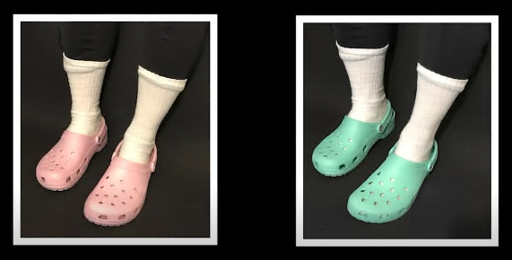
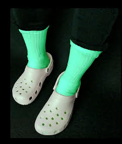
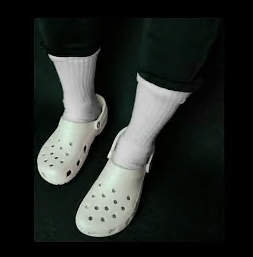
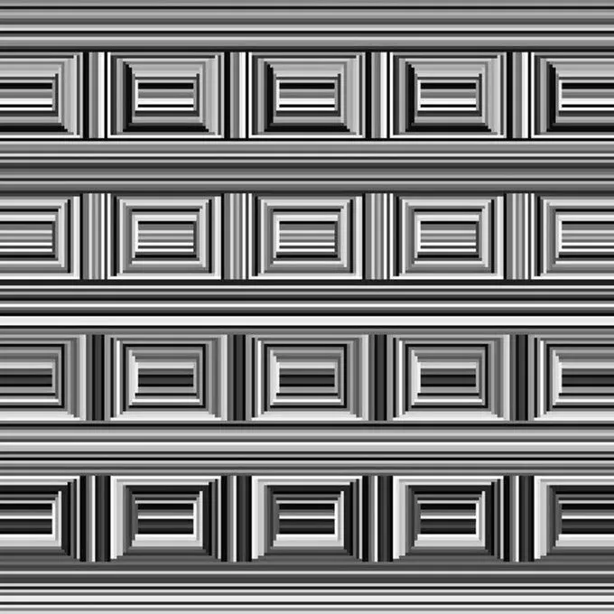
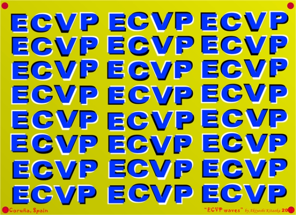
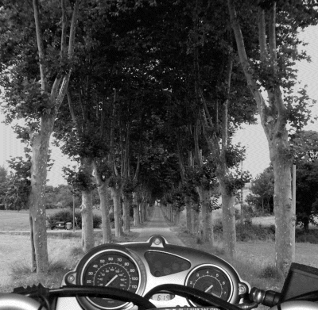
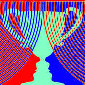
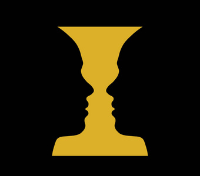
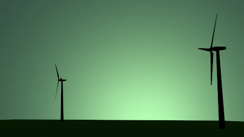

错觉
年度最佳错觉大赛每年都会评出前十名作品，下面介绍几个。
辨认颜色
洞洞鞋与袜子（Crocs & Socks）

你能辨认这两双鞋的的颜色吗？

那这个呢？
这个其实是粉色洞洞鞋，它在绿色的灯光下呈现出灰色。
有一些人有足够的信念相信袜子是白色的，于是他们能够还原出鞋原本的颜色。

把袜子P成白色的后，所有人看见的都是灰色的鞋了。
改变颜色
动画中可以看作红色和绿色的方块在向下运动，但当你强迫自己将其看作是向右运动后，方块会变成黄色。
如果你觉得有困难，可以试着挡住画面的大部分，令其只剩下很矮的一行。
保险箱错觉
大部分人第一次看到的都是重复的矩形，但图里其实还有16个圆形。

3D错觉模型
杉原厚吉是错觉大赛的常客
b站搬运
https://www.bilibili.com/video/BV1Xs411v7mv/
https://www.bilibili.com/video/BV1F8411Z7ee/
虚幻运动（Illusory motion）
方块运动错觉
这是2005年的大奖，总结了边缘亮度变化造成的运动错觉。
前两个方块内部颜色不变，边框的明暗在变化；后两个方块边框颜色不变，内部的明暗在变化。随着亮度的变化,我们能看到向内或向外运动的错觉。
利用此原理的作品之后也多次获奖。
周边漂移错觉（Peripheral drift illusion）

二冲程动画
利用两帧加一个空白帧制造连续运动的错觉。
如果仅有两帧，得到的是来回运动的视觉效果。加入空白帧后，在空白帧上，视觉系统会生成对比度反转的神经图像，这个图像和下一个循环的第一帧组合，产生不断前进的错觉。
！！闪烁警告！！

（似乎有些设备上不能完整播放出三帧的循环）
之后类似的错觉作品也多次获奖
下班归来
！！闪烁警告！！
这个动图有四帧，第二帧比第一帧有些许前进，第四帧比第三帧有些许前进。从第二帧到第三帧是倒退的，但这里巧妙地用反色削弱了我们对倒退的感知。
海上船只
！！闪烁警告！！
物体识别
歧义图（Ambiguous image）
一个图形多种解释。
轮廓是我们识别物体的重要信息，而歧义图中一个轮廓对应多种解释。
错觉大赛的表示就是一个歧义图。

其灵感来自经典的鲁宾花瓶。

这个画面即能看成一个花瓶，也能看成两个面对面的人脸。
三重立方体
风车剪影
风车是在逆时针还是顺时针转？

双轴错觉
这是2019最佳视错觉。
它在横向转还是竖向转？顺时针还是逆时针？
加速错觉
这是错觉大赛中第一次纯听觉作品获奖。
这个作品展现了一个节奏无限加速的错觉。
搬运：https://www.bilibili.com/video/BV1Bc41137bE/
其灵感来自里塞节奏（Risset Rhythm）。
一条音轨的节奏逐渐加快的同时，另一条BPM是其二分之一的音轨悄悄出现并逐渐加大音量占据主导，而前者的音量逐渐减少并消失，如此循环。
另一个类似的错觉是里塞滑音。运用了类似的原理造成音调无限下降的错觉。
体感
Kento Imai, Kenri Kodaka等人经常研究一些能让人体验到虚幻触觉的错觉。
著名的橡胶手错觉想必有很多人知道。将被实验者的右手放在视野之外，并将一个橡胶手放在视野内，同时触摸橡胶手和被实验者右手相同部位，逐渐的，被实验者会觉得这个橡胶手是真正的右手。
史莱姆手
X射线头骨
更多
请到官网查看。